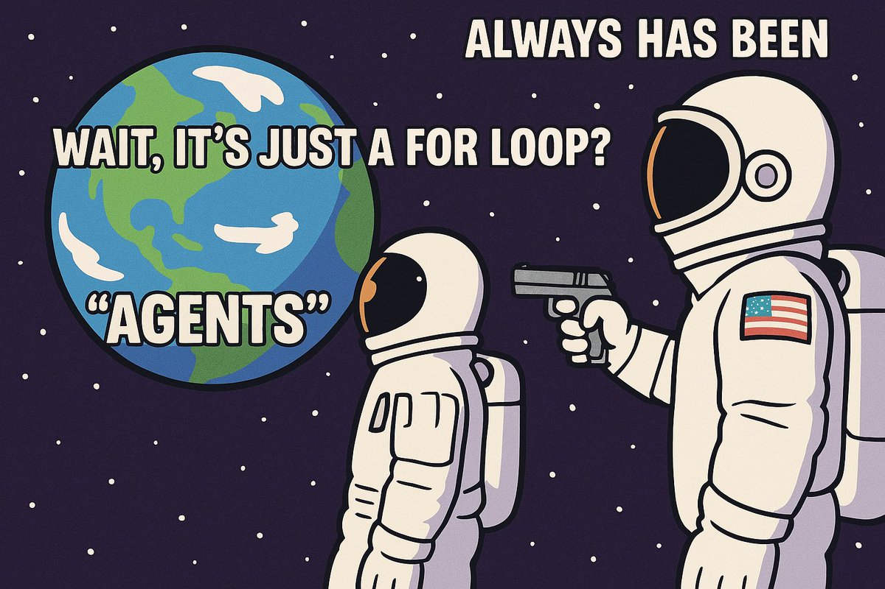
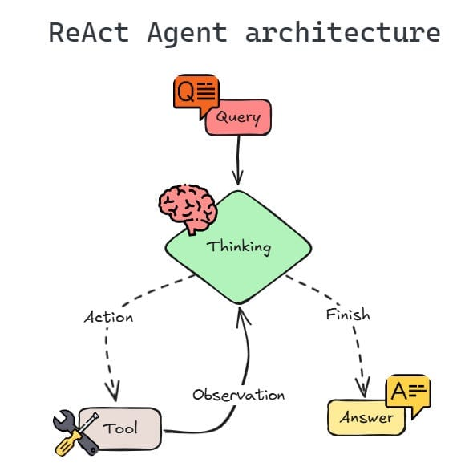
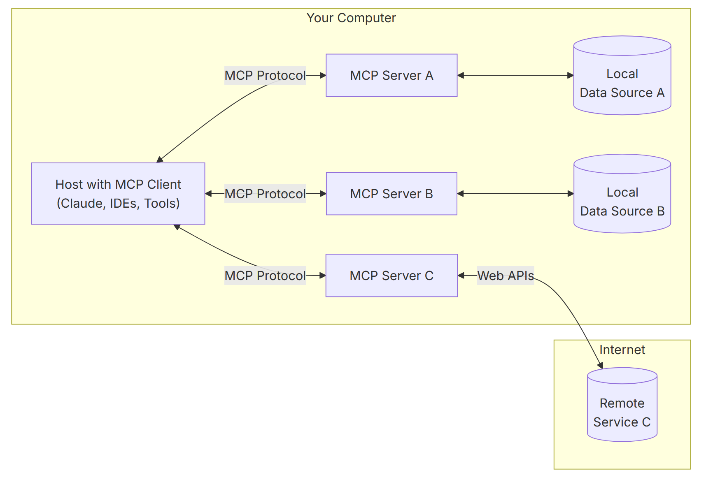

Agents
Introduction
So far in this course we covered the fundamentals of language models. We talked about chatbots and we discussed function calling (even though we did not implement the function execution). We also covered retrieval augmented generation (RAG) in some detail.
Today, we move one step further: we look at systems in which an LLM controls the flow of an application, orchestrates tools, and decides which steps to take next. These systems are often called agents. Closely related are LLM pipelines, where we hard-code a sequence of steps instead of letting the model decide dynamically.
Before we get there, let’s take a closer look at tools — because tools are what give an LLM the ability to actually do things, rather than just talk about them.
We can broadly distinguish two kinds of tools. The first kind is read-only and non-invasive: the model can observe the world, but not change it. Examples include reading files, searching a vector store, or running a quick web search.
The second kind involves actions — tools that change state in the world. This includes sending emails; writing, modifying, or deleting files; executing commands, scripts, or code; opening and interacting with other applications; or installing additional software. And, at the more adventurous end of the spectrum: ordering things online, investing in totally valid cryptocurrency schemes, deleting all your files, or corrupting your operating system.
The distinction matters, because read-only tools are relatively safe to hand to an autonomous system — the worst case is a bad answer. Action tools, by contrast, can have real, irreversible consequences.
As discussed in Chatbots and Function Calling, integrating a tool requires the following steps:
- The LLM must know which tools are available — typically via descriptions passed in the system prompt.
- The LLM must be instructed to produce its response in a structured format when it intends to call a tool.
- That response must be parsed to extract the tool call and its arguments.
- Finally, the tool must actually be executed, and the result fed back to the model.
With this infrastructure in place, we are only one small step away from an agent.
Agents: closing the loop
Once tool calling and execution are in place, building an agent is conceptually straightforward: it is essentially a loop wrapped around the tool-calling mechanism.

A widely used pattern for structuring this loop is ReAct (Reasoning + Acting), introduced by Yao et al. (Yao et al., 2023). The core idea is to interleave reasoning and action in a repeating cycle:
- The agent reasons about the current situation (“Thought”).
- It chooses and executes an action — typically a tool call.
- It observes the result (“Observation”).
- It updates its reasoning and decides on the next step.
- This thought–action–observation loop repeats until a stopping condition is met.
In pseudocode (adapted from the smolagents documentation):
memory = [user_defined_task]
while llm_should_continue(memory):
action = llm_get_next_action(memory)
observations = execute_action(action)
memory += [action, observations]
final_answer = llm_generate_answer(memory)
return final_answer
The intelligence of the system is not in the loop itself — that part is trivial. It lies in three things:
- the prompting that shapes how the LLM reasons and selects actions,
- the tool design (signatures, descriptions, and error behavior), and
- the memory representation — what gets recorded, in what format, and subject to what limits.
Get those three right, and a surprisingly simple loop can produce remarkably capable behavior.
Frameworks
Implementing all of this from scratch is instructive, but quickly becomes involved. In practice, you would reach for a framework — and there is no shortage of options. Here is a non-exhaustive overview:
- smolagents: A lightweight agent framework by Hugging Face, designed to be simple and hackable. It has good conceptual documentation and an active community, making it a natural starting point.
- LlamaIndex: Originally a data framework for building LLM applications around your own data. It has grown to offer convenient abstractions for tools, agents, and memory, with many examples and tutorials.
- Haystack: An open-source NLP framework focused on production-ready applications, developed by the German company deepset. It supports both LLMs and classical NLP models.
- LangChain: A modular library for building LLM applications — chains, agents, tools — with a large ecosystem of integrations. One of the most widely adopted frameworks in the space.
- LangGraph: An agent framework by the LangChain team that models agent behavior as a graph of states and transitions, giving you finer control over multi-step workflows.
- n8n: A low-code/no-code platform for workflow automation, useful when you want to wire together tools and APIs without writing much code.
- Agent Development Kit (ADK): Google’s agent framework, introduced in April 2025. It is relatively new but comes with strong tooling and production-oriented design.
For a quick prototype or to get a feel for agent mechanics, smolagents is a good choice — it stays close to the concepts without too much abstraction. For production use, the ADK is worth a closer look.
Have a look at the smolagents framework.
- Set up a local LLM (e.g. using Ollama or LM Studio) to be used by the agent.
- Choose a small task for your agent, e.g. answering questions about a specific topic, summarizing a document, etc. (use the one in the tutorial).
- Implement the agent.
- Have a deeper look! Try to find the system prompt, the agent gives to the LLM.
Google ADK: first contact
Google’s Agent Development Kit (ADK) is a Python framework for building multi-agent systems with explicit graph-topology primitives (Erwin Huizenga & Bo Yang, 2025). Its main advantage for teaching is the built-in Dev UI, which renders the agent graph and execution trace in a browser with zero configuration. Comparable frameworks you may encounter include LangGraph (more granular node-based control), CrewAI (role-based agent teams), and AutoGen (conversation-based multi-agent coordination). ADK sits at the structured and illustrative end of this spectrum.
ADK does not speak to Ollama or LM Studio directly. It requires a LiteLlm wrapper that translates between ADK’s interface and the local provider’s API. LiteLlm is a thin SDK adapter, not a running service. The model string must include a provider prefix that tells LiteLLM which backend to use:
uv add google-adk litellmfrom google.adk.models.lite_llm import LiteLlm
import os
# Ollama
os.environ["OLLAMA_API_BASE"] = "http://localhost:11434"
model = LiteLlm(model="ollama_chat/gemma3:latest")
# LM Studio
os.environ["LM_STUDIO_API_BASE"] = "http://localhost:1234"
model = LiteLlm(model="lm_studio/gemma3")Without the prefix LiteLLM cannot route the request and raises a BadRequestError. The prefix is the only required change when switching backends.
The three types needed for first contact are LlmAgent, Runner, and Session. An LlmAgent is a leaf node: a single LLM call with a system prompt and optional tools. Runner executes a pipeline against a Session, which holds conversation and pipeline state. ADK has further composition types that are introduced when they are needed below.
| Type | Role |
|---|---|
| LlmAgent | Leaf node: one LLM call, one system prompt |
| FunctionNode | Leaf node: a Python function as a graph step |
| Workflow | Graph of nodes connected by explicit edges; handles sequential, looping, and parallel topologies |
| Runner | Executes a pipeline against a session |
| Session | Holds conversation and pipeline state |
Full API reference: https://google.github.io/adk-docs/
- Install the dependencies:
uv add google-adk litellm - Make sure Ollama is running with a model that supports tool calls (e.g.
gemma3,qwen2.5,llama3:instruct). - Run the following minimal agent and confirm it responds:
from google.adk.agents import LlmAgent
from google.adk.models.lite_llm import LiteLlm
from google.adk.sessions import InMemorySessionService
from google.adk.runners import Runner
from google.genai import types
import os
os.environ["OLLAMA_API_BASE"] = "http://localhost:11434"
agent = LlmAgent(
name="Hello",
model=LiteLlm(model="ollama_chat/gemma3:latest"),
instruction="You are a helpful assistant. Answer briefly.",
)
session_service = InMemorySessionService()
runner = Runner(agent=agent, app_name="hello", session_service=session_service)
session = session_service.create_session_sync(app_name="hello", user_id="student")
for event in runner.run(
user_id="student",
session_id=session.id,
new_message=types.Content(role="user", parts=[types.Part(text="Say hello!")])
):
if event.is_final_response():
print(event.content.parts[0].text)- Start the Dev UI:
adk weband explore the agent tree in the browser.
Pipelines vs. agents – when do we need agency?
An agent is defined by its ability to decide. This brings flexibility – but also complexity and potential instability. You have to decide, if an agent is necessary to solve your problem or if you are better of using a pipeline. Actually, most of the examples you find in tutorials will be better solved with a pipeline. We will use the example from the smolagents introduction to illustrate that.
Let’s take an example: say you’re making an app that handles customer requests on a surfing trip website. Consider these two scenarios:
1. Simple, predictable workflow
You know in advance that user requests fall into a few categories and can be handled by a fixed sequence of steps.
- If the user wants general information on surf trips → show a search interface over your FAQ.
- If the user wants to talk to sales → collect their contact details in a form.
Here, a hand-coded workflow is simpler, more robust, and easier to test.
2. Open-ended, complex workflow Let’s assume he user asks:
“I can come on Monday, but I forgot my passport so I might be delayed to Wednesday. Is it possible to take me and my luggage surfing on Tuesday morning, with cancellation insurance?”
This touches several aspects (availability, logistics, insurance) where a fixed decision tree might become unwieldy. An agent can interpret the request and decide which information and tools are needed.
Rule of thumb:
If your workflow is essentially “always do A, then B, then C”, a pipeline of LLM calls (plus classic code) is often enough. If you regularly need adaptive decisions, an agent becomes attractive.
For RAG-style systems, this is particularly relevant:
- If retrieval is mandatory for correctness, you may not want to leave the “call retrieval or not?” decision to the LLM.
- Instead, you enforce: “always retrieve, then generate”, implemented as a pipeline.
Discuss: for the examples encountered so far, does it make sense to use an agent? Or would a pipeline be sufficient? Maybe even better?
Model context protocol
So far, we only used small, self-written or pre-build tools. In general though, agents are not restricted to this. In order to harness LLM agents to their full potential, we want them to assist in a variety of tasks. In a company setting, the agent could be supposed to interact with the internal tool and applications the company uses in their daily business, e.g. gather information from the ERP system, write emails or search the web.
Every time developers want to give an AI access to external data or tools, they have to build custom, one-off integrations. It’s like building a different key for every single door.
MCP creates a standardized way for AI models to connect to external resources. Think of it as:
- Universal translator: One standard “language” for AI-to-tool communication
- Plugin system: Like browser extensions, but for AI assistants
- Modular approach: Write a tool once, use it with any MCP-compatible AI
So, first and foremost, MCP is an interface standard that defines how external tools can be integrated into large language models (LLMs). It provides a set of protocols and APIs that allow LLMs to interact with these tools seamlessly. This includes defining the inputs and outputs for each interaction, as well as the mechanisms for error handling and feedback loops.
In addition to a standard definition, anthropic also released an implementation of MCP in a number of languages, including Python. It also hosts a repository on GitHub with examples and documentation that you can use as a starting point for building your own integrations. There is also a large and growing collection of pre-built connectors to third-party services like databases, APIs, and other tools. That means developers don’t have to start from scratch every time they want to add new functionality to their LLMs.
Have a look!
- Find the MCP and MCP server repository on GitHub
- Browse through the list of server implementations, find one (or many) that you find interesting.
But what is an MCP server anyway? And how does MCP work exactly?
Core concepts
The following is more or less taken from the official website.
At its core, MCP follows a client-server architecture where a host application can connect to multiple servers:

- MCP Hosts: Programs like Claude Desktop, IDEs, or AI tools that want to access data through MCP
- MCP Clients: Protocol clients that maintain 1:1 connections with servers
- MCP Servers: Lightweight programs that each expose specific capabilities through the standardized Model Context Protocol
- Local Data Sources: Your computer’s files, databases, and services that MCP servers can securely access
- Remote Services: External systems available over the internet (e.g., through APIs) that MCP servers can connect to
The servers come in three main flavours:
- Resources: File-like data that can be read by clients (like API responses or file contents)
- Tools: Functions that can be called by the LLM (with user approval)
- Prompts: Pre-written templates that help users accomplish specific tasks
As you have seen in the repository, there are lots of pre-built servers available.
Now it’s time to implement a simple example using MCP!
- Read the MCP section for ADK.
- Set up a local MCP server using one of the examples in the documentation.
- Make it work with your agent you implemented earlier.
Project work
Time to work on your projects!
Go in your project teams. Discuss:
- What framework do you want to use? Why do you prefer it?
- What tools (if any) do you need for your project?
- Do you need the full agent capability or a simpler pipeline setup?
Further Readings
- The Tiny Agents blogpost really helps understanding agents.
- A nice Example of an agent system is Vending-Bench (Backlund & Petersson, 2025), where an AI agent is tasked with managing a vending machine. The agent is responsible for deciding what products to stock, when to restock, which prices to set, etc. based on its understanding of the market demand, competition, and other factors. It provides valuable insights into how and why these systems fail and is a very good read overall.